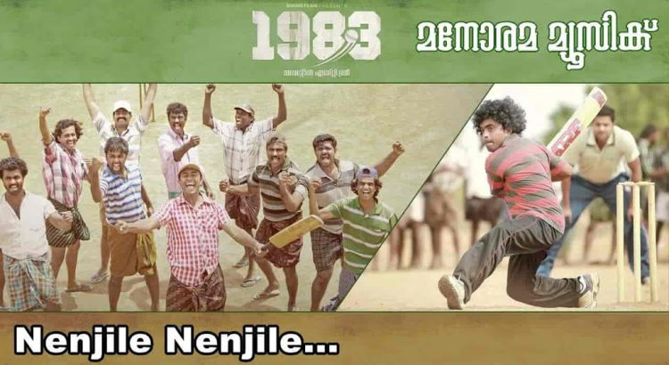

Olanjali Kuruvi Lyrics – Olanjali Kuruvi Song is sung by P Jayachandran & Vani Jayaram, composed by Gopi Sunder with lyrics penned by Hari Narayanan. Movie: 1983 (2014) Singer(s): P Jayachandran & Vani Jayaram Music: Gopi Sunder Lyrics: Hari Narayanan Olanjali Kuruvi Lyrics in English Olanjali kuruvi, ilam Kaattilaadi Varu nee.. Koottukoodi kinungi, mizhippeeli melle […]
Category: malayalamlyrics

Manikya Malaraya Poovi lyrics – Oru Adaar Love
Manikya Malaraya Poovi Song Lyrics from “Oru Adaar Love“.Manikya Malaraya Poovi is sung by Vineeth Sreenivasan. Manikya Malaraya Poovi song music done by Shaan Rahman. Manikya Malaraya Poovi song lyrics was penned by PMA Jabbar. Oru Adaar Love (2018) is an Indian Malayalam language film is directed by Omar Lulu. Oru Adaar Love (2018) star […]

Nenjile nenjile Lyrics : 1983 Malayalam Movie song
Nenjile Nenjile Song Lyrics sung by Shankar Mahadevan, Gopi Sunder & Aleetta Dennis, composed by Gopi Sunder with lyrics penned by Santhosh Varma. Song : Nenjile nenjile Movie : 1983 Year : 2013 Singer(s) : Shankar Mahadevan, Gopi Sunder & Aleetta Dennis Musician : Gopi Sundar Lyrics : Sathosh Varma Nenjile nenjile Lyrics Nenjile nenjile Nenjile nenjile nenjile […]
Ambalapuzhe unnikannanodu nee
Ambalapuzhe unnikannanodu nee lyrics Movie Name: Adwaitham (1992) Singer: Chithra K S, Sreekumar M G Year: 1992 Director: Priyadarshan Ambalapuzhe unnikannanodu nee Enthu paribhavam melleyothi vannuvo Kalvilakkukal paathi minni nilkkave Enthu nalkuvaan enne kaathu ninnu nee Thriprasaadavum mouna chumbanangalum Pankuvakkuvaan odi vannathaanu njaan Raaga chandanam ninte netiyil thodaan Gopa kanyayay odi vannathaanu njaan (ambala) aa….aa…..aa…..aa….aa…. […]
Fejo – Oorjam | ഊര്ജ്ജം Malayalam Rap Song Lyrics | mangolyrics.com
Fejo – Oorjam | ഊര്ജ്ജം Malayalam Rap Song Lyrics Oorjam is the latest malayalam rap song sung and written by FEJO and beats are composed by Jeffin Jestin. Fejo – Oorjam song detail Lyrics by : Fejo Singer : Fejo Beats : Jeffin Jestin subscribe to his youtube channel FEJO – OORJAM lyrics Hey njan ennum […]
Moham Kondu Njan Lyrics In Malayalam ( മോഹം കൊണ്ടു ഞാന് ഗാനത്തിന്റെ വരികൾ ) – Shesham Kaazhchayil Malayalam Movie Songs Lyrics
Moham Kondu Njan Lyrics In Malayalam ( മോഹം കൊണ്ടു ഞാന് ഗാനത്തിന്റെ വരികൾ ) – Shesham Kaazhchayil Malayalam Movie Songs Lyrics മോഹം കൊണ്ടു ഞാന്ദൂരെയേതോഈണം പൂത്ത നാള്മധു തേടിപ്പോയിമോഹം കൊണ്ടു ഞാന്ദൂരെയേതോഈണം പൂത്ത നാള്മധു തേടിപ്പോയിനീളേ താഴേതളിരാര്ന്നു പൂവനങ്ങള്മോഹം കൊണ്ടു ഞാന്ദൂരെയേതോഈണം പൂത്ത നാള്മധു തേടിപ്പോയികണ്ണില് കത്തും ദാഹംഭാവജാലം പീലി നീര്ത്തിവര്ണ്ണങ്ങളാല് മേലെകതിര്മാല കൈകള് നീട്ടികണ്ണില് കത്തും ദാഹംഭാവജാലം പീലി നീര്ത്തിവര്ണ്ണങ്ങളാല് മേലെകതിര്മാല കൈകള് നീട്ടിസ്വര്ണ്ണത്തേരേറി ഞാന്തങ്കത്തിങ്കള്പോലെദൂരെ ആകാശ നക്ഷത്രപൂക്കള് […]
Athapoovum Nulli Lyrics In Malayalam ( അത്തപ്പൂവും നുള്ളി ഗാനത്തിന്റെ വരികൾ ) – Punnaram Cholli Cholli Movie Songs Lyrics
Athapoovum Nulli Lyrics In Malayalam ( അത്തപ്പൂവും നുള്ളി ഗാനത്തിന്റെ വരികൾ ) – Punnaram Cholli Cholli Movie Songs Lyrics അത്തപ്പൂവും നുള്ളിതൃത്താപ്പൂവും നുള്ളിതന്നാനം പാടി പൊന്നൂഞ്ഞാലിലാടിതെന്നലേ വാഒന്നാനാം കുന്നിലോടി വാഅത്തപ്പൂവും നുള്ളിതൃത്താപ്പൂവും നുള്ളിതന്നാനം പാടി പൊന്നൂഞ്ഞാലിലാടിതെന്നലേ വാഒന്നാനാം കുന്നിലോടി വാഇല്ലത്തമ്മ നീരാടി പോരും നേരംവെള്ളിപ്പൂങ്കിണ്ണം തുള്ളി തുള്ളീപൂവും നീരും തൂകിതൂകിപൂവും നീരും തൂകിതൂകി ഏഴേഴുതോഴിമാരും വാ അത്തപ്പൂവും നുള്ളിതൃത്താപ്പൂവും നുള്ളിതന്നാനം പാടി പൊന്നൂഞ്ഞാലിലാടിതെന്നലേ വാഒന്നാനാം കുന്നിലോടി വാഎന്തേ തുമ്പീ തുള്ളാത്തൂപൂവുപോരേതുള്ളിപ്പാടാത്തൂ പൊന്നും […]